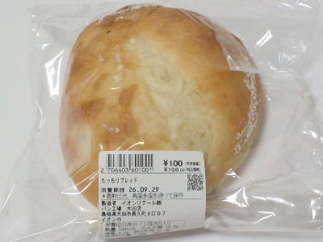

島根県大田市長久町土江97イオン内
更新日 : 2016/09/27

ふんわりした大きなパンです。名前がもっちりブレッドなので弾力感がありました。
全体的にほんのり塩味があるので、そのまま食べても塩味とパンの味で十分楽しめました。
カットして食べるとより好きかな。
税込み108円でこの美味しさは素晴らしいです。
【おいしいものを食べよう。】【たくさん寝よう。】
【ソロ活をしよう!】【季節感のあることをしよう。】【動画視聴はほどほどに。】【当サイトの全てのコンテンツは無断転載禁止です。】